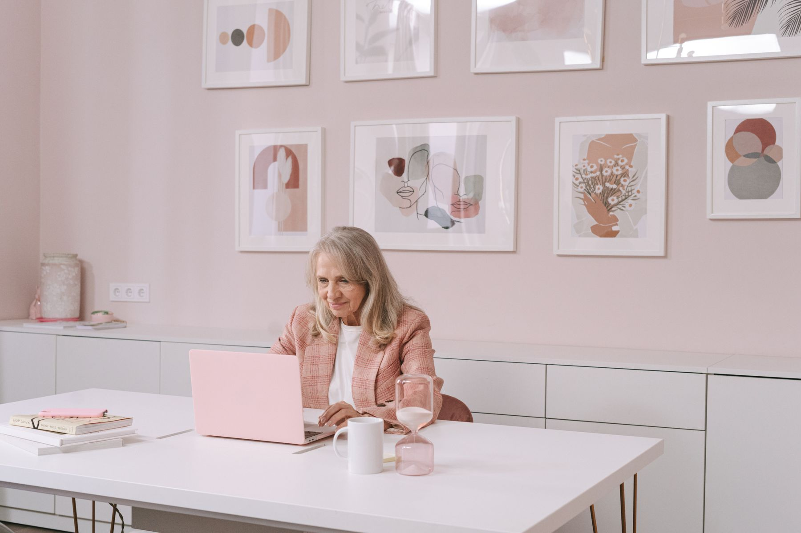

真实摄影与来源
本演示采用下列 12 张真实摄影作品，来自 Pexels 摄影者作品页。保留署名和原始链接；图片作为沟通主题的场景配图，均不表示案例企业现场、研究样本或人物真实经历。
Pexels License · 已查阅允许在演示中使用的条款。上列摄影图像仅做展示尺寸与裁切，未用生成式 AI 改图。
返回演示
RDNE Stock project
A Happy Man Sitting at an Office
展示位置：第 2、3、13 页 · 角色头像摄影配图
人物年龄、职务为讨论情境设定，不代表被摄者真实身份。仅裁切、缩放。
原始照片页面Bùi Hoàng Long
Portrait of a Young Man in a Blue Shirt
展示位置：第 3、13 页 · 角色头像摄影配图
人物年龄、职务为讨论情境设定，不代表被摄者真实身份。仅裁切、缩放。
原始照片页面飞书私聊界面参考
第 3 页为 HTML 绘制的情境示意，使用小组讨论中的消息原文，并非真实聊天截图。界面采用本人消息在右侧的模式，已读标记参考官方说明。
设备界面参考
第 3 页使用 HTML/CSS 绘制 Duo 外屏造型，按演示要求采用高:宽 1.41:1；聊天内容沿用小组讨论消息。
玩梗贴纸（非配图体系）
第 2、4、5、9、10、14、19、20、22、24、32、33、34 页另有 13 张“奶家人”表情包贴纸，应小组聊天中的玩梗要求加入，仅作留白处的表情使用，不配说明文字，不参与论证。图片由组员在小组聊天中提供，原始作者与授权未能核实；正式公开传播前应替换或补充授权。